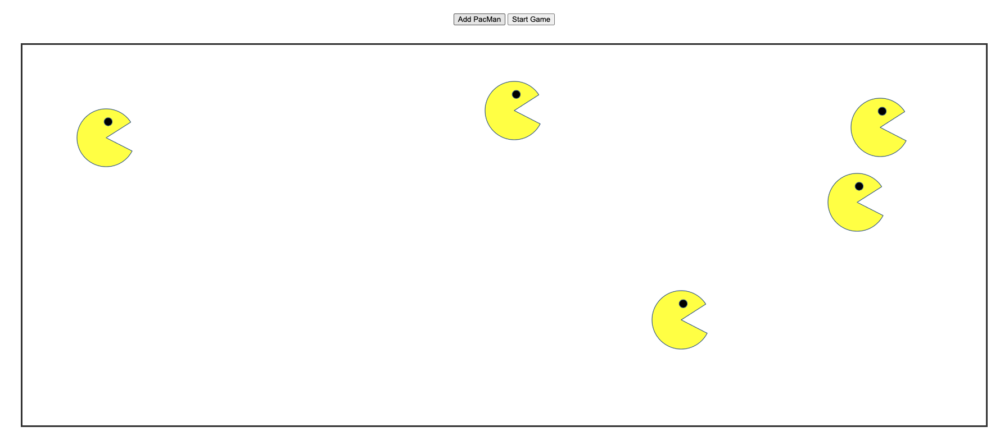

This was a Pacman exercise where we were given starter code and had to add code to start the pacman in a random place. Also, needed to add a checkCollision function to make pacman bounce around.
An eye movement exercise where 2 eyes will move in the direction the mouse is moving. The eyes follow the movement of the mouse.

Real-time tracking of a bus route in the Boston MTA from MIT to Harvard. This app uses the Google Maps API and real-time API call to Boston MTA.